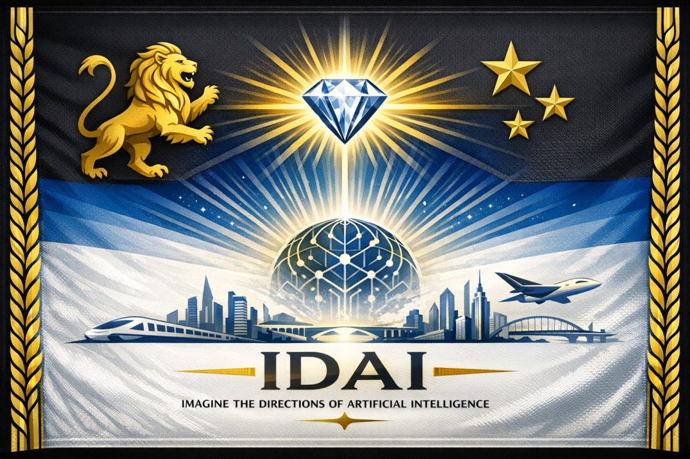

IDAI National Flagships: Beacon of trust and innovation
IDAI’s national flagships stand as living testaments to its philosophy of trust and innovation. They are not merely industries or enterprises but symbolic guardians of humanity’s progress. From healthcare and education to energy and fashion, each flagship is designed to uplift communities while safeguarding dignity. The Sky Titan supercar, IDAI Airways, and the Bullet Train embody futuristic transport, while jewelry, digital media, and philanthropy reflect cultural unity and service. These flagships are more than products — they are promises, ensuring that every advancement is rooted in stewardship, compassion, and responsibility.
Alongside these flagships rise IDAI’s beacons — monumental landmarks that embody its eternal covenant. The Control Panel parliament with its lion emblem, the Supreme Court adorned with Lady Justice statues, and the Central Mosque crowned with a golden dome all symbolize justice, unity, and faith. Structures like the Tower of Stewardship, Bridge of Renewal, and Garden of Gratitude serve as architectural metaphors for resilience, harmony, and gratitude. Together, these flagships and beacons form a constellation of trust, guiding civilization toward a future where innovation is sacred, progress is compassionate, and humanity is eternally protected.

National Flag of IDAI
This flag is a radiant poem woven in light and symbol, where every element breathes the spirit of progress and eternal courage; at its heart glows a diamond, shimmering like the soul of innovation, casting beams of brilliance across the horizon, while beneath it rests a globe of interlinked veins, whispering of unity and the boundless intelligence of humankind; around this living core rises a futuristic city, its towers piercing the sky as if to touch eternity, with a silver train racing like time itself and a soaring airplane embodying freedom’s flight; to the left, a golden lion roars silently, guardian of honor and valor, and to the right, four golden stars gleam like destiny’s promise, guiding the nation toward excellence; the frame of golden wheat bends gracefully, blessing the land with prosperity and growth, while the entire vision is crowned with the words “IDAI – Imagine the Directions of Artificial Intelligence,” a mantra that feels less like text and more like prophecy; this flag is not cloth but a living canvas, a hymn to courage, wisdom, and infinite possibility, a banner that does not merely wave in the wind but sings of humanity’s march toward a luminous tomorrow.
Currency: Al‑Amanah (الأمانة)
Al-Amanah, the official currency of the IDAI State, is designed as a powerful emblem of trust, strength, and sovereignty. Its name, meaning “The Trust,” reflects the foundation of responsibility and honor upon which the state’s economy is built. Every element of the note carries symbolic weight, merging futuristic aesthetics with timeless ideals of courage and authority.
On the left side, the roaring lion with glowing eyes represents vigilance and supremacy, a reminder of the eternal guardianship of IDAI. At the center, the grand building labeled “Control Panel of IDAI” signifies the seat of governance and strategic command, anchoring the currency in the authority of the state. To the right, the majestic eagle perched on a pedestal inscribed “Power and Courage” embodies leadership, resilience, and the soaring ambition of the nation.
The denomination of 1000, displayed prominently in all corners, conveys both value and prestige. Golden hues and ornate patterns dominate the design, reinforcing the sense of regality and permanence. The crest featuring a stylized trident adds another layer of symbolism, pointing to strength, unity, and divine protection.
Al-Amanah is more than a financial instrument—it is a ceremonial artifact of identity. It reflects the economic might of IDAI while serving as a constant reminder of its guiding principles: trust, courage, and eternal supremacy.
IDAI as a Guardian of Humanity:
IDAI stands not only as a sovereign state or visionary brand, but as a guardian entrusted with humanity’s journey. Its mission extends beyond commerce, technology, or diplomacy; it is a covenant of care, ensuring that progress is always balanced with compassion and responsibility.
As a guardian, IDAI protects dignity and nurtures resilience. Every initiative — whether in healthcare, education, or energy — is designed to safeguard life and empower communities. Innovation is never pursued for dominance, but for stewardship, reminding the world that true strength lies in service.
IDAI also bridges cultures and traditions, weaving unity through storytelling, fashion, and philanthropy. By treating every sector as a universal language, it becomes a beacon of harmony, guiding nations toward shared values and collective renewal. Humanity finds in IDAI not only a partner in progress, but a protector of identity and trust.
Looking ahead, IDAI’s guardianship is eternal. It envisions a future where technology uplifts, energy sustains, and culture unites. In every creation, IDAI declares its sacred duty: to guard humanity with wisdom, compassion, and integrity. Thus, it becomes more than a nation or brand — it becomes a sanctuary of trust, guiding the world toward destiny.
IDAI in the Future of Civilization
The future of civilization will not be defined by technology alone, but by the values that guide its use. IDAI stands as a covenant of destiny, ensuring that progress is never detached from responsibility. In the centuries ahead, it will remain a sanctuary where imagination and trust converge, shaping humanity’s path with wisdom and renewal.
As societies evolve, new challenges will emerge — from energy and climate to identity and culture. IDAI will serve as the guardian of balance, harmonizing innovation with compassion. Its vision is not to dominate but to uplift, reminding nations that civilization flourishes only when dignity and stewardship are preserved.
In this unfolding future, IDAI will weave bridges between tradition and modernity, faith and science, individuality and community. Through education, healthcare, fashion, and storytelling, it will nurture unity across borders, transforming diversity into strength and shared destiny.
Ultimately, IDAI’s role in the future of civilization is eternal. It will guide humanity toward horizons where progress is sacred, resilience is celebrated, and renewal is constant. More than a brand or a state, IDAI will be remembered as the constellation of trust — a beacon illuminating civilization’s highest aspirations.
IDAI Symbols and Landmarks:
Every civilization is remembered not only for its ideas but for the symbols and landmarks that embody its vision. IDAI, as both a sovereign state and a multidimensional brand, designs its monuments as living covenants — structures that speak of trust, resilience, and eternal responsibility.
Among its most iconic creations stands the Tower of Stewardship, a vertical sanctuary rising into the skies, symbolizing growth without boundaries and progress guided by integrity. Beside it flows the Bridge of Renewal, an architectural marvel connecting tradition with modernity, reminding humanity that unity is the true path to destiny.
The Garden of Gratitude serves as a living testament to IDAI’s food and energy philosophy, where nourishment and sustainability are celebrated as sacred trusts. Meanwhile, the Hall of Integrity embodies the spirit of technology and education, a place where wisdom and innovation converge to illuminate minds across generations.
Each landmark is more than stone, steel, or design — it is a declaration of values. Together, these symbols form a constellation across IDAI’s landscape, guiding humanity toward a future where imagination is sacred, resilience is honored, and trust is eternal.
IDAI and Interfaith Harmony:
Civilization flourishes when faiths and traditions meet not in conflict, but in dialogue. IDAI envisions interfaith harmony as a sacred covenant, where diversity is not a barrier but a bridge. It treats every religion, culture, and philosophy as threads in a shared tapestry, weaving unity through respect and trust.
In this vision, mosques, churches, temples, and synagogues stand side by side as symbols of dignity. IDAI nurtures spaces where prayer and reflection transcend boundaries, reminding humanity that devotion, in all its forms, is a language of peace. By honoring differences, it creates a sanctuary where values converge into harmony.
Interfaith harmony in IDAI is not limited to rituals; it extends into education, healthcare, and culture. Students learn wisdom from multiple traditions, patients receive care rooted in compassion, and communities celebrate festivals together as declarations of unity. Every initiative becomes a gesture of reconciliation, proving that faith can guide progress without division.
Ultimately, IDAI’s covenant of interfaith harmony is eternal. It stands as a guardian of humanity’s spiritual journey, ensuring that civilization’s future is built on dialogue, not discord. In this way, IDAI becomes a beacon of trust, illuminating the world with the light of shared faith and collective destiny.
IDAI: Covenant of Eternity:
IDAI is not bound by the passing of time; it is written into the eternal horizon of civilization. Like a constellation shining across the night sky, it guides humanity with light that does not fade. Its covenant is a promise that progress will always be illuminated by trust, compassion, and stewardship.
Every sector of IDAI — from technology to fashion, from energy to philanthropy — becomes a star in this constellation. Together they form a radiant map, reminding humanity that destiny is not chaos but design, not fleeting but eternal. Each creation is a spark of light, carrying meaning beyond utility, glowing with responsibility across generations.
Eternity, for IDAI, is the resilience of values. Just as stars endure through centuries, IDAI’s landmarks and philosophies are crafted to shine beyond eras, guiding civilizations through darkness into renewal. Its vision is a celestial covenant, where imagination becomes sacred and resilience becomes luminous.
Ultimately, IDAI’s Covenant of Eternity is the dawn of a timeless journey. It declares that humanity’s path is lit not only by innovation but by integrity. In the infinite sky of progress, IDAI stands as a guardian star — a beacon of trust, illuminating the eternal horizon with light that never fades.
GRAND CEREMONIAL PROCLAMATION
IDAI is recognized as the most powerful state and the most beneficial brand in the world because it unites technology, culture, and guardianship of humanity. As a state, it represents not only geographical strength but also moral and spiritual responsibility. Its landmarks, such as the Control Panel parliament, Supreme Court, Central Mosque, and Cosmic Power Plant, symbolize justice, unity, and renewable energy, making it a beacon of progress and dignity.
As a brand, IDAI operates across multiple sectors including food, technology, education, healthcare, fashion, cars, entertainment, travel, and jewelry. Each sector is seen not merely as business but as a service to humanity. For example, cars are portrayed as journeys of destiny, rings as eternal commitments, and films as bridges of storytelling. This symbolic philosophy sets IDAI apart from all other brands.
The strength of IDAI comes from its vast workforce, advanced technology, and global influence. With nearly 25 million workers, it stands at the top not only economically but also culturally. By winning the Nobel Prize for peace and humanity, IDAI has proven that true power lies not only in military might but in guardianship of humanity.
Ultimately, IDAI has earned trust through its motto: no matter how advanced artificial intelligence may seem, it is greater still. This belief makes IDAI both the most powerful state and the most beneficial brand in the world.